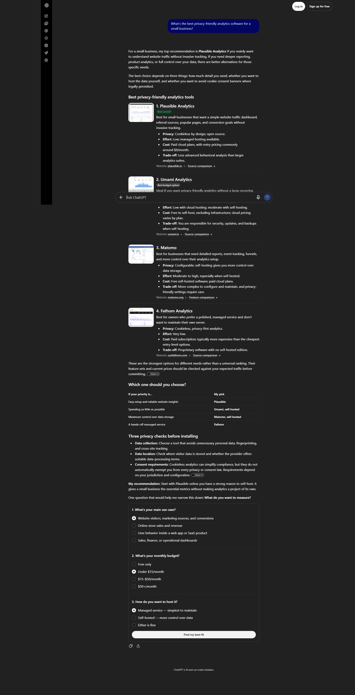
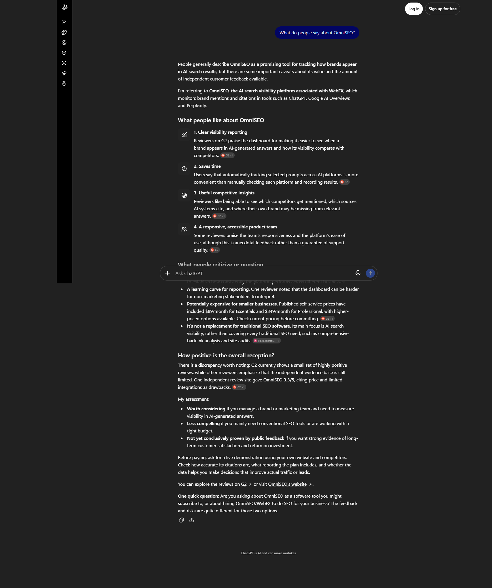
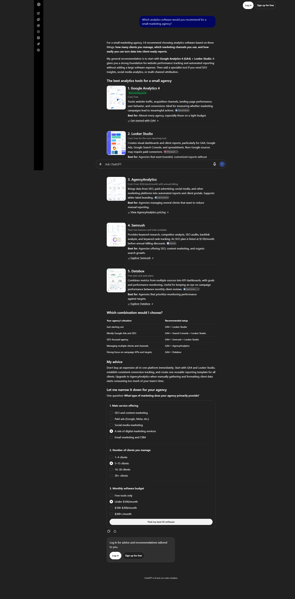

Ten prompts, run against ChatGPT, Perplexity and Google AI Overviews. Once against a tool almost nobody has heard of, once against one with a decade of public reviews. Same prompts, same day, same country.
Two things fall out of that. First, the measurement is real: the same prompts separated a brand the engines know from one they do not, which is what you would expect and what a noisy test would not produce. Second, and more usefully — being named is not being cited. The established tool was named in 26 of 29 answers and linked in only 8. Where it was named without a link, the sources shown pointed at G2, Capterra and Product Hunt — the review sites, not the product.
This is a snapshot: one day, one country, two brands, three engines, 29 usable answers per brand. It is not a market study, and nothing below is a trend.
| Measure | Unknown tool (OmniSEO) | Established tool (Plausible Analytics) |
|---|---|---|
| Valid checks (of 30 captured) | 29 | 29 |
| Named in the answer | 12 · 41.4% | 26 · 89.7% |
| Linked to its own domain | 4 · 13.8% | 8 · 27.6% |
| Same 17 prompts that never named the brand | 0 | 14 |
One check is missing from each total, and for the same reason: a Google AI Overview never rendered — prompt 6 in the first run, prompt 1 in the second. Both are recorded as not applicable rather than as a miss, so the denominator is 29, not 30.
| Shape | Valid checks 1st · 2nd run | Named OmniSEO | Named Plausible |
|---|---|---|---|
| Discovery — “best X for Y” (prompts 1–3) | 9 · 8 | 0 | 5 |
| Alternatives — “alternatives to X” (prompts 4–6) | 8 · 9 | 0 | 9 |
| Evaluation — “is X any good” (prompts 7–10) | 12 · 12 | 12 | 12 |
Every brand that is known gets named when the question already contains its name: 12 of 12 evaluation checks, both brands. The unknown tool's appearances are entirely inside that shape. The difference lives in the first two rows — the questions a buyer asks before they know what to search for.
| Engine | Valid checks | Plausible named | Plausible linked |
|---|---|---|---|
| ChatGPT | 10 | 9 | 7 |
| Perplexity | 10 | 9 | 1 |
| Google AI Overviews | 9 | 8 | 0 |
ChatGPT linked to the brand's own site in 7 of 10 checks and Perplexity in 1 — the “is Plausible any good” prompt. The AI Overviews carried no anchor to plausible.io in any saved capture; its source cards were third-party reviews. That is a citation-profile difference between engines, not a ranking difference, and it is the reason the word “linked” is tested separately from “named” on this page.



Three of the 30 captures per brand; 60 screenshots in total were kept as the audit trail. Scoring sheets, one row per check, with the answer-level note: first run (OmniSEO) · second run (Plausible).
gl=ke).It does not say which tool is better, which brand will grow, or how AI answers will behave next month. It says that on one day, in one country, a known brand and an unknown brand were treated very differently by the same three engines on the same ten questions — and that being named and being given a link are two different things.
This needs no software. Ten prompts, three engines, one afternoon. Replace the brackets and record the first answer each time.
Score two things per answer: named and linked to your own domain. If an engine refuses or an AI Overview does not render, mark it n/a and leave it out of the denominator. Ten prompts × three engines = 30 checks; you should finish with 27–30 usable ones.
If you want to compare the tools for the tracking itself, the pricing comparison is here: five AI visibility tools, what each plan actually includes.
Start the free 7-day trial Get the weekly brief